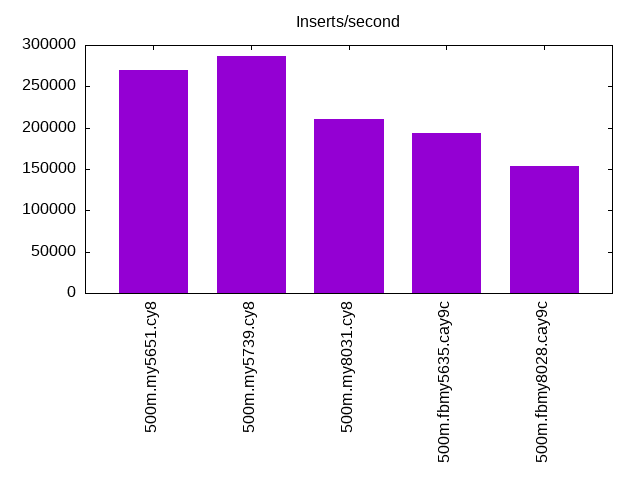
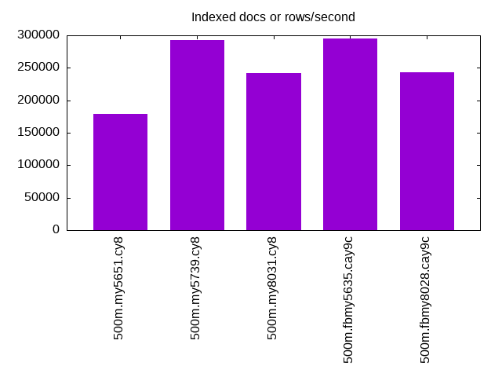
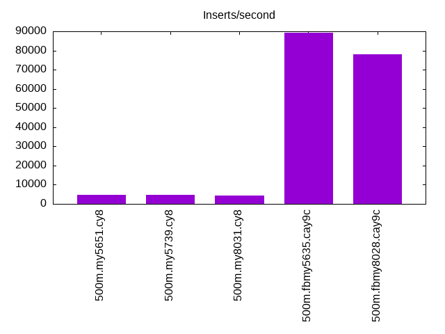
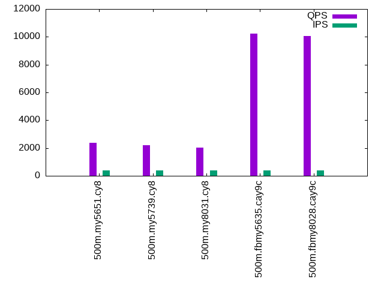
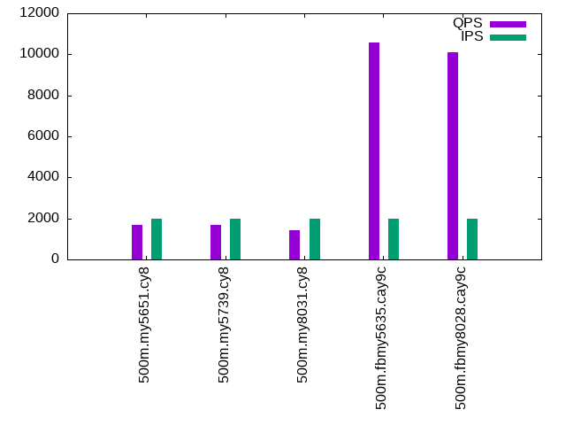
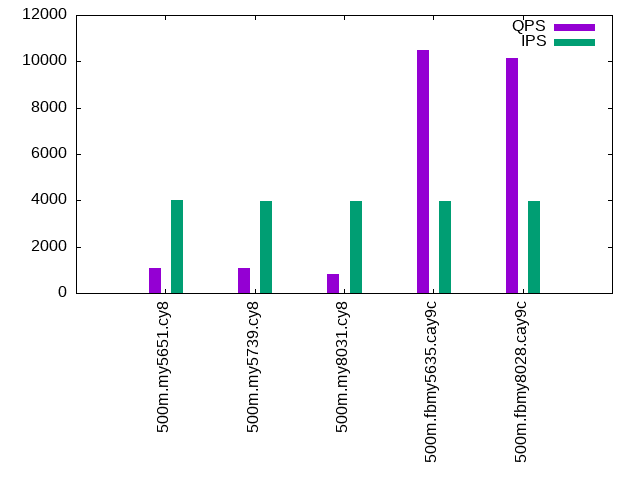

This is a report for the insert benchmark with 500M docs and 4 client(s). It is generated by scripts (bash, awk, sed) and Tufte might not be impressed. An overview of the insert benchmark is here and a short update is here. Below, by DBMS, I mean DBMS+version.config. An example is my8020.c10b40 where my means MySQL, 8020 is version 8.0.20 and c10b40 is the name for the configuration file.
The test server has 8 AMD cores, 16G RAM and an NVMe SSD. It is described here as the Beelink. The benchmark was run with 4 clients and there were 1 or 2 connections per client (1 for queries, 1 for inserts). The benchmark loads 500M rows without secondary indexes, creates secondary indexes, loads another 10M rows then does 3 read+write tests for one hour each that do queries as fast as possible with 100, 500 and then 1000 writes/second/client concurrent with the queries. The database doesn't fit in memory and parts of the benchmark are IO-bound. Clients and the DBMS share one server. The per-database configs are in the per-database subdirectories here.
The tested DBMS are:
The numbers are inserts/s for l.i0 and l.i1, indexed docs (or rows) /s for l.x and queries/s for q*.2. The values are the average rate over the entire test for inserts (IPS) and queries (QPS). The range of values for IPS and QPS is split into 3 parts: bottom 25%, middle 50%, top 25%. Values in the bottom 25% have a red background, values in the top 25% have a green background and values in the middle have no color. A gray background is used for values that can be ignored because the DBMS did not sustain the target insert rate. Red backgrounds are not used when the minimum value is within 80% of the max value.
| dbms | l.i0 | l.x | l.i1 | q100.1 | q500.1 | q1000.1 |
|---|---|---|---|---|---|---|
| 500m.my5651.cy8 | 269396 | 179440 | 4808 | 2355 | 1666 | 1087 |
| 500m.my5739.cy8 | 286862 | 293314 | 4792 | 2197 | 1686 | 1075 |
| 500m.my8031.cy8 | 210261 | 242532 | 4378 | 2048 | 1405 | 822 |
| 500m.fbmy5635.cay9c | 193199 | 294696 | 89286 | 10210 | 10572 | 10492 |
| 500m.fbmy8028.cay9c | 153092 | 242885 | 78125 | 10041 | 10111 | 10127 |
This lists the average rate of inserts/s for the tests that do inserts concurrent with queries. For such tests the query rate is listed in the table above. The read+write tests are setup so that the insert rate should match the target rate every second. Cells that are not at least 95% of the target have a red background to indicate a failure to satisfy the target.
| dbms | q100.1 | q500.1 | q1000.1 |
|---|---|---|---|
| my5651.cy8 | 399 | 1996 | 3993 |
| my5739.cy8 | 399 | 1996 | 3992 |
| my8031.cy8 | 399 | 1996 | 3992 |
| fbmy5635.cay9c | 399 | 1996 | 3992 |
| fbmy8028.cay9c | 399 | 1996 | 3992 |
| target | 400 | 2000 | 4000 |
l.i0: load without secondary indexes. Graphs for performance per 1-second interval are here.
Average throughput:
Insert response time histogram: each cell has the percentage of responses that take <= the time in the header and max is the max response time in seconds. For the max column values in the top 25% of the range have a red background and in the bottom 25% of the range have a green background. The red background is not used when the min value is within 80% of the max value.
| dbms | 256us | 1ms | 4ms | 16ms | 64ms | 256ms | 1s | 4s | 16s | gt | max |
|---|---|---|---|---|---|---|---|---|---|---|---|
| my5651.cy8 | 0.361 | 98.933 | 0.479 | 0.205 | 0.021 | 0.001 | nonzero | 1.337 | |||
| my5739.cy8 | 0.013 | 99.743 | 0.209 | 0.018 | 0.015 | 0.002 | nonzero | 1.409 | |||
| my8031.cy8 | 99.657 | 0.279 | 0.038 | 0.026 | 0.001 | nonzero | 1.190 | ||||
| fbmy5635.cay9c | 99.853 | 0.124 | 0.006 | 0.011 | 0.005 | 0.603 | |||||
| fbmy8028.cay9c | 99.399 | 0.560 | 0.020 | 0.017 | 0.004 | 0.591 |
Performance metrics for the DBMS listed above. Some are normalized by throughput, others are not. Legend for results is here.
ips qps rps rmbps wps wmbps rpq rkbpq wpi wkbpi csps cpups cspq cpupq dbgb1 dbgb2 rss maxop p50 p99 tag 269396 0 2234 8.7 1121.6 86.7 0.008 0.033 0.004 0.329 33546 73.1 0.125 22 32.9 73.4 10.7 1.337 70024 32755 500m.my5651.cy8 286862 0 1 0.0 1214.8 92.8 0.000 0.000 0.004 0.331 32800 79.1 0.114 22 32.9 73.4 10.9 1.409 73521 49267 500m.my5739.cy8 210261 0 1 0.0 1370.7 79.9 0.000 0.000 0.007 0.389 24788 75.4 0.118 29 32.8 35.2 11.1 1.190 53762 41355 500m.my8031.cy8 193199 0 5 0.7 369.5 82.3 0.000 0.004 0.002 0.436 19967 79.0 0.103 33 15.7 16.1 4.2 0.603 49064 30866 500m.fbmy5635.cay9c 153092 0 2 0.3 305.0 66.8 0.000 0.002 0.002 0.447 16404 75.1 0.107 39 15.7 16.3 4.7 0.591 38860 25190 500m.fbmy8028.cay9c
l.x: create secondary indexes.
Average throughput:
Performance metrics for the DBMS listed above. Some are normalized by throughput, others are not. Legend for results is here.
ips qps rps rmbps wps wmbps rpq rkbpq wpi wkbpi csps cpups cspq cpupq dbgb1 dbgb2 rss maxop p50 p99 tag 179440 0 1570 141.9 4632.4 247.9 0.009 0.810 0.026 1.415 16918 37.1 0.094 17 67.8 108.3 10.5 0.051 NA NA 500m.my5651.cy8 293314 0 1940 222.3 3829.1 295.1 0.007 0.776 0.013 1.030 15854 31.9 0.054 9 73.6 114.1 10.3 0.006 NA NA 500m.my5739.cy8 242532 0 3761 312.6 4653.4 283.9 0.016 1.320 0.019 1.199 14699 61.9 0.061 20 73.3 75.8 10.4 0.009 NA NA 500m.my8031.cy8 294696 0 382 64.6 201.1 44.3 0.001 0.224 0.001 0.154 1602 47.9 0.005 13 33.5 34.0 6.4 0.004 NA NA 500m.fbmy5635.cay9c 242885 0 316 53.4 165.3 36.6 0.001 0.225 0.001 0.154 1429 48.4 0.006 16 33.5 34.1 8.3 0.006 NA NA 500m.fbmy8028.cay9c
l.i1: continue load after secondary indexes created. Graphs for performance per 1-second interval are here.
Average throughput:
Insert response time histogram: each cell has the percentage of responses that take <= the time in the header and max is the max response time in seconds. For the max column values in the top 25% of the range have a red background and in the bottom 25% of the range have a green background. The red background is not used when the min value is within 80% of the max value.
| dbms | 256us | 1ms | 4ms | 16ms | 64ms | 256ms | 1s | 4s | 16s | gt | max |
|---|---|---|---|---|---|---|---|---|---|---|---|
| my5651.cy8 | 19.488 | 55.211 | 13.350 | 7.899 | 3.667 | 0.386 | 3.017 | ||||
| my5739.cy8 | 3.574 | 74.609 | 9.963 | 6.736 | 4.817 | 0.301 | 1.788 | ||||
| my8031.cy8 | 0.053 | 70.489 | 13.548 | 10.877 | 4.947 | 0.085 | 2.285 | ||||
| fbmy5635.cay9c | 99.768 | 0.199 | 0.022 | 0.004 | 0.006 | 0.400 | |||||
| fbmy8028.cay9c | 98.989 | 0.949 | 0.045 | 0.018 | 0.125 |
Performance metrics for the DBMS listed above. Some are normalized by throughput, others are not. Legend for results is here.
ips qps rps rmbps wps wmbps rpq rkbpq wpi wkbpi csps cpups cspq cpupq dbgb1 dbgb2 rss maxop p50 p99 tag 4808 0 3002 46.0 4448.5 147.9 0.624 9.790 0.925 31.505 16287 10.0 3.388 166 107.1 151.1 10.5 3.017 250 0 500m.my5651.cy8 4792 0 2920 45.6 4217.5 143.7 0.609 9.750 0.880 30.702 15122 13.8 3.156 230 107.1 151.2 10.7 1.788 200 0 500m.my5739.cy8 4378 0 2710 42.3 5400.7 155.6 0.619 9.904 1.234 36.393 21330 16.1 4.872 294 106.8 112.6 10.7 2.285 250 50 500m.my8031.cy8 89286 0 2 0.3 314.1 70.4 0.000 0.003 0.004 0.807 20068 68.0 0.225 61 35.2 36.9 6.6 0.400 23474 14534 500m.fbmy5635.cay9c 78125 0 8 1.0 301.8 66.7 0.000 0.013 0.004 0.874 16918 70.4 0.217 72 34.8 36.6 6.9 0.125 20385 12586 500m.fbmy8028.cay9c
q100.1: range queries with 100 insert/s per client. Graphs for performance per 1-second interval are here.
Average throughput:
Query response time histogram: each cell has the percentage of responses that take <= the time in the header and max is the max response time in seconds. For max values in the top 25% of the range have a red background and in the bottom 25% of the range have a green background. The red background is not used when the min value is within 80% of the max value.
| dbms | 256us | 1ms | 4ms | 16ms | 64ms | 256ms | 1s | 4s | 16s | gt | max |
|---|---|---|---|---|---|---|---|---|---|---|---|
| my5651.cy8 | 28.442 | 15.107 | 53.739 | 1.261 | 1.376 | 0.075 | 0.227 | ||||
| my5739.cy8 | 12.549 | 30.169 | 54.936 | 0.807 | 1.394 | 0.145 | nonzero | 0.466 | |||
| my8031.cy8 | 5.370 | 36.412 | 54.134 | 2.148 | 1.923 | 0.013 | 0.150 | ||||
| fbmy5635.cay9c | 7.999 | 91.968 | 0.025 | 0.007 | nonzero | nonzero | 0.167 | ||||
| fbmy8028.cay9c | 1.530 | 98.440 | 0.024 | 0.005 | nonzero | 0.033 |
Insert response time histogram: each cell has the percentage of responses that take <= the time in the header and max is the max response time in seconds. For max values in the top 25% of the range have a red background and in the bottom 25% of the range have a green background. The red background is not used when the min value is within 80% of the max value.
| dbms | 256us | 1ms | 4ms | 16ms | 64ms | 256ms | 1s | 4s | 16s | gt | max |
|---|---|---|---|---|---|---|---|---|---|---|---|
| my5651.cy8 | 1.653 | 62.295 | 27.170 | 8.875 | 0.007 | 0.281 | |||||
| my5739.cy8 | 0.233 | 77.389 | 12.382 | 9.934 | 0.062 | 0.424 | |||||
| my8031.cy8 | 0.170 | 81.431 | 17.733 | 0.667 | 0.153 | ||||||
| fbmy5635.cay9c | 99.826 | 0.174 | 0.011 | ||||||||
| fbmy8028.cay9c | 99.785 | 0.208 | 0.007 | 0.018 |
Performance metrics for the DBMS listed above. Some are normalized by throughput, others are not. Legend for results is here.
ips qps rps rmbps wps wmbps rpq rkbpq wpi wkbpi csps cpups cspq cpupq dbgb1 dbgb2 rss maxop p50 p99 tag 399 2355 12480 194.9 1467.2 43.2 5.299 84.738 3.674 110.697 36282 12.7 15.405 431 107.2 151.2 10.5 0.227 671 32 500m.my5651.cy8 399 2197 11656 182.1 1471.2 43.1 5.306 84.902 3.685 110.528 34102 13.5 15.525 492 107.2 151.2 10.7 0.466 639 32 500m.my5739.cy8 399 2048 10819 169.0 1711.0 43.3 5.283 84.534 4.286 111.052 33701 15.1 16.458 590 106.8 112.7 10.7 0.150 575 48 500m.my8031.cy8 399 10210 235 2.1 9.1 1.0 0.023 0.207 0.023 2.461 39647 49.6 3.883 389 34.9 36.8 9.6 0.167 2589 1966 500m.fbmy5635.cay9c 399 10041 239 2.1 7.2 1.0 0.024 0.218 0.018 2.508 38975 50.4 3.881 402 34.9 37.0 9.3 0.033 2573 1662 500m.fbmy8028.cay9c
q500.1: range queries with 500 insert/s per client. Graphs for performance per 1-second interval are here.
Average throughput:
Query response time histogram: each cell has the percentage of responses that take <= the time in the header and max is the max response time in seconds. For max values in the top 25% of the range have a red background and in the bottom 25% of the range have a green background. The red background is not used when the min value is within 80% of the max value.
| dbms | 256us | 1ms | 4ms | 16ms | 64ms | 256ms | 1s | 4s | 16s | gt | max |
|---|---|---|---|---|---|---|---|---|---|---|---|
| my5651.cy8 | 26.322 | 15.697 | 52.005 | 2.410 | 3.387 | 0.180 | nonzero | 0.257 | |||
| my5739.cy8 | 12.859 | 28.818 | 53.694 | 1.453 | 2.909 | 0.267 | nonzero | 0.297 | |||
| my8031.cy8 | 4.598 | 35.866 | 50.006 | 4.904 | 4.581 | 0.045 | 0.153 | ||||
| fbmy5635.cay9c | 7.573 | 92.361 | 0.061 | 0.005 | nonzero | 0.022 | |||||
| fbmy8028.cay9c | 1.207 | 98.743 | 0.047 | 0.004 | nonzero | 0.018 |
Insert response time histogram: each cell has the percentage of responses that take <= the time in the header and max is the max response time in seconds. For max values in the top 25% of the range have a red background and in the bottom 25% of the range have a green background. The red background is not used when the min value is within 80% of the max value.
| dbms | 256us | 1ms | 4ms | 16ms | 64ms | 256ms | 1s | 4s | 16s | gt | max |
|---|---|---|---|---|---|---|---|---|---|---|---|
| my5651.cy8 | 16.070 | 52.492 | 28.540 | 2.898 | 0.254 | ||||||
| my5739.cy8 | 10.771 | 75.455 | 12.640 | 1.135 | 0.204 | ||||||
| my8031.cy8 | 0.116 | 88.162 | 11.378 | 0.343 | 0.160 | ||||||
| fbmy5635.cay9c | 98.157 | 1.838 | 0.005 | 0.019 | |||||||
| fbmy8028.cay9c | 96.443 | 3.529 | 0.028 | 0.023 |
Performance metrics for the DBMS listed above. Some are normalized by throughput, others are not. Legend for results is here.
ips qps rps rmbps wps wmbps rpq rkbpq wpi wkbpi csps cpups cspq cpupq dbgb1 dbgb2 rss maxop p50 p99 tag 1996 1666 8911 138.9 2387.3 70.8 5.349 85.354 1.196 36.346 28955 12.3 17.382 591 107.7 151.7 10.5 0.257 448 32 500m.my5651.cy8 1996 1686 8984 140.4 2424.6 71.2 5.329 85.266 1.215 36.533 29278 13.8 17.368 655 107.7 151.7 10.7 0.297 448 32 500m.my5739.cy8 1996 1405 7494 117.1 2894.8 73.4 5.332 85.319 1.450 37.669 28190 15.1 20.058 860 107.3 113.1 10.7 0.153 384 48 500m.my8031.cy8 1996 10572 3 0.4 19.2 3.2 0.000 0.039 0.010 1.639 40255 51.2 3.808 387 35.7 36.5 10.6 0.022 2621 2255 500m.fbmy5635.cay9c 1996 10111 1 0.2 16.7 3.0 0.000 0.016 0.008 1.556 38254 52.2 3.783 413 35.6 36.7 10.6 0.018 2541 2111 500m.fbmy8028.cay9c
q1000.1: range queries with 1000 insert/s per client. Graphs for performance per 1-second interval are here.
Average throughput:
Query response time histogram: each cell has the percentage of responses that take <= the time in the header and max is the max response time in seconds. For max values in the top 25% of the range have a red background and in the bottom 25% of the range have a green background. The red background is not used when the min value is within 80% of the max value.
| dbms | 256us | 1ms | 4ms | 16ms | 64ms | 256ms | 1s | 4s | 16s | gt | max |
|---|---|---|---|---|---|---|---|---|---|---|---|
| my5651.cy8 | 23.066 | 16.508 | 50.708 | 2.709 | 6.566 | 0.443 | nonzero | 0.263 | |||
| my5739.cy8 | 12.451 | 27.033 | 52.602 | 1.690 | 5.450 | 0.773 | 0.001 | 0.329 | |||
| my8031.cy8 | 3.408 | 34.599 | 41.408 | 10.349 | 10.132 | 0.105 | 0.221 | ||||
| fbmy5635.cay9c | 5.725 | 94.114 | 0.151 | 0.010 | nonzero | nonzero | 0.143 | ||||
| fbmy8028.cay9c | 0.889 | 99.002 | 0.103 | 0.006 | nonzero | 0.030 |
Insert response time histogram: each cell has the percentage of responses that take <= the time in the header and max is the max response time in seconds. For max values in the top 25% of the range have a red background and in the bottom 25% of the range have a green background. The red background is not used when the min value is within 80% of the max value.
| dbms | 256us | 1ms | 4ms | 16ms | 64ms | 256ms | 1s | 4s | 16s | gt | max |
|---|---|---|---|---|---|---|---|---|---|---|---|
| my5651.cy8 | 14.173 | 50.091 | 32.728 | 3.009 | 0.246 | ||||||
| my5739.cy8 | 0.557 | 75.810 | 21.271 | 2.360 | 0.002 | 0.366 | |||||
| my8031.cy8 | 0.001 | 83.054 | 16.423 | 0.522 | 0.179 | ||||||
| fbmy5635.cay9c | 95.557 | 4.429 | 0.014 | nonzero | 0.196 | ||||||
| fbmy8028.cay9c | 95.053 | 4.913 | 0.034 | 0.033 |
Performance metrics for the DBMS listed above. Some are normalized by throughput, others are not. Legend for results is here.
ips qps rps rmbps wps wmbps rpq rkbpq wpi wkbpi csps cpups cspq cpupq dbgb1 dbgb2 rss maxop p50 p99 tag 3993 1087 6266 97.1 3006.9 90.2 5.762 91.464 0.753 23.142 22687 14.7 20.864 1081 108.6 152.6 10.5 0.263 240 16 500m.my5651.cy8 3992 1075 6151 96.1 3024.8 89.9 5.720 91.519 0.758 23.061 22523 15.3 20.945 1138 108.6 152.7 10.7 0.329 304 16 500m.my5739.cy8 3992 822 4791 74.9 3715.6 95.7 5.826 93.214 0.931 24.556 22869 17.4 27.810 1693 108.2 114.1 10.8 0.221 176 32 500m.my8031.cy8 3992 10492 17 1.2 36.1 6.9 0.002 0.116 0.009 1.766 39455 53.0 3.760 404 36.8 37.5 10.6 0.143 2637 2269 500m.fbmy5635.cay9c 3992 10127 19 1.5 36.5 7.3 0.002 0.156 0.009 1.885 37413 54.6 3.694 431 36.8 37.7 10.6 0.030 2525 2126 500m.fbmy8028.cay9c
l.i0: load without secondary indexes
Performance metrics for all DBMS, not just the ones listed above. Some are normalized by throughput, others are not. Legend for results is here.
ips qps rps rmbps wps wmbps rpq rkbpq wpi wkbpi csps cpups cspq cpupq dbgb1 dbgb2 rss maxop p50 p99 tag 269396 0 2234 8.7 1121.6 86.7 0.008 0.033 0.004 0.329 33546 73.1 0.125 22 32.9 73.4 10.7 1.337 70024 32755 500m.my5651.cy8 286862 0 1 0.0 1214.8 92.8 0.000 0.000 0.004 0.331 32800 79.1 0.114 22 32.9 73.4 10.9 1.409 73521 49267 500m.my5739.cy8 210261 0 1 0.0 1370.7 79.9 0.000 0.000 0.007 0.389 24788 75.4 0.118 29 32.8 35.2 11.1 1.190 53762 41355 500m.my8031.cy8 193199 0 5 0.7 369.5 82.3 0.000 0.004 0.002 0.436 19967 79.0 0.103 33 15.7 16.1 4.2 0.603 49064 30866 500m.fbmy5635.cay9c 153092 0 2 0.3 305.0 66.8 0.000 0.002 0.002 0.447 16404 75.1 0.107 39 15.7 16.3 4.7 0.591 38860 25190 500m.fbmy8028.cay9c
l.x: create secondary indexes
Performance metrics for all DBMS, not just the ones listed above. Some are normalized by throughput, others are not. Legend for results is here.
ips qps rps rmbps wps wmbps rpq rkbpq wpi wkbpi csps cpups cspq cpupq dbgb1 dbgb2 rss maxop p50 p99 tag 179440 0 1570 141.9 4632.4 247.9 0.009 0.810 0.026 1.415 16918 37.1 0.094 17 67.8 108.3 10.5 0.051 NA NA 500m.my5651.cy8 293314 0 1940 222.3 3829.1 295.1 0.007 0.776 0.013 1.030 15854 31.9 0.054 9 73.6 114.1 10.3 0.006 NA NA 500m.my5739.cy8 242532 0 3761 312.6 4653.4 283.9 0.016 1.320 0.019 1.199 14699 61.9 0.061 20 73.3 75.8 10.4 0.009 NA NA 500m.my8031.cy8 294696 0 382 64.6 201.1 44.3 0.001 0.224 0.001 0.154 1602 47.9 0.005 13 33.5 34.0 6.4 0.004 NA NA 500m.fbmy5635.cay9c 242885 0 316 53.4 165.3 36.6 0.001 0.225 0.001 0.154 1429 48.4 0.006 16 33.5 34.1 8.3 0.006 NA NA 500m.fbmy8028.cay9c
l.i1: continue load after secondary indexes created
Performance metrics for all DBMS, not just the ones listed above. Some are normalized by throughput, others are not. Legend for results is here.
ips qps rps rmbps wps wmbps rpq rkbpq wpi wkbpi csps cpups cspq cpupq dbgb1 dbgb2 rss maxop p50 p99 tag 4808 0 3002 46.0 4448.5 147.9 0.624 9.790 0.925 31.505 16287 10.0 3.388 166 107.1 151.1 10.5 3.017 250 0 500m.my5651.cy8 4792 0 2920 45.6 4217.5 143.7 0.609 9.750 0.880 30.702 15122 13.8 3.156 230 107.1 151.2 10.7 1.788 200 0 500m.my5739.cy8 4378 0 2710 42.3 5400.7 155.6 0.619 9.904 1.234 36.393 21330 16.1 4.872 294 106.8 112.6 10.7 2.285 250 50 500m.my8031.cy8 89286 0 2 0.3 314.1 70.4 0.000 0.003 0.004 0.807 20068 68.0 0.225 61 35.2 36.9 6.6 0.400 23474 14534 500m.fbmy5635.cay9c 78125 0 8 1.0 301.8 66.7 0.000 0.013 0.004 0.874 16918 70.4 0.217 72 34.8 36.6 6.9 0.125 20385 12586 500m.fbmy8028.cay9c
q100.1: range queries with 100 insert/s per client
Performance metrics for all DBMS, not just the ones listed above. Some are normalized by throughput, others are not. Legend for results is here.
ips qps rps rmbps wps wmbps rpq rkbpq wpi wkbpi csps cpups cspq cpupq dbgb1 dbgb2 rss maxop p50 p99 tag 399 2355 12480 194.9 1467.2 43.2 5.299 84.738 3.674 110.697 36282 12.7 15.405 431 107.2 151.2 10.5 0.227 671 32 500m.my5651.cy8 399 2197 11656 182.1 1471.2 43.1 5.306 84.902 3.685 110.528 34102 13.5 15.525 492 107.2 151.2 10.7 0.466 639 32 500m.my5739.cy8 399 2048 10819 169.0 1711.0 43.3 5.283 84.534 4.286 111.052 33701 15.1 16.458 590 106.8 112.7 10.7 0.150 575 48 500m.my8031.cy8 399 10210 235 2.1 9.1 1.0 0.023 0.207 0.023 2.461 39647 49.6 3.883 389 34.9 36.8 9.6 0.167 2589 1966 500m.fbmy5635.cay9c 399 10041 239 2.1 7.2 1.0 0.024 0.218 0.018 2.508 38975 50.4 3.881 402 34.9 37.0 9.3 0.033 2573 1662 500m.fbmy8028.cay9c
q500.1: range queries with 500 insert/s per client
Performance metrics for all DBMS, not just the ones listed above. Some are normalized by throughput, others are not. Legend for results is here.
ips qps rps rmbps wps wmbps rpq rkbpq wpi wkbpi csps cpups cspq cpupq dbgb1 dbgb2 rss maxop p50 p99 tag 1996 1666 8911 138.9 2387.3 70.8 5.349 85.354 1.196 36.346 28955 12.3 17.382 591 107.7 151.7 10.5 0.257 448 32 500m.my5651.cy8 1996 1686 8984 140.4 2424.6 71.2 5.329 85.266 1.215 36.533 29278 13.8 17.368 655 107.7 151.7 10.7 0.297 448 32 500m.my5739.cy8 1996 1405 7494 117.1 2894.8 73.4 5.332 85.319 1.450 37.669 28190 15.1 20.058 860 107.3 113.1 10.7 0.153 384 48 500m.my8031.cy8 1996 10572 3 0.4 19.2 3.2 0.000 0.039 0.010 1.639 40255 51.2 3.808 387 35.7 36.5 10.6 0.022 2621 2255 500m.fbmy5635.cay9c 1996 10111 1 0.2 16.7 3.0 0.000 0.016 0.008 1.556 38254 52.2 3.783 413 35.6 36.7 10.6 0.018 2541 2111 500m.fbmy8028.cay9c
q1000.1: range queries with 1000 insert/s per client
Performance metrics for all DBMS, not just the ones listed above. Some are normalized by throughput, others are not. Legend for results is here.
ips qps rps rmbps wps wmbps rpq rkbpq wpi wkbpi csps cpups cspq cpupq dbgb1 dbgb2 rss maxop p50 p99 tag 3993 1087 6266 97.1 3006.9 90.2 5.762 91.464 0.753 23.142 22687 14.7 20.864 1081 108.6 152.6 10.5 0.263 240 16 500m.my5651.cy8 3992 1075 6151 96.1 3024.8 89.9 5.720 91.519 0.758 23.061 22523 15.3 20.945 1138 108.6 152.7 10.7 0.329 304 16 500m.my5739.cy8 3992 822 4791 74.9 3715.6 95.7 5.826 93.214 0.931 24.556 22869 17.4 27.810 1693 108.2 114.1 10.8 0.221 176 32 500m.my8031.cy8 3992 10492 17 1.2 36.1 6.9 0.002 0.116 0.009 1.766 39455 53.0 3.760 404 36.8 37.5 10.6 0.143 2637 2269 500m.fbmy5635.cay9c 3992 10127 19 1.5 36.5 7.3 0.002 0.156 0.009 1.885 37413 54.6 3.694 431 36.8 37.7 10.6 0.030 2525 2126 500m.fbmy8028.cay9c
Insert response time histogram
256us 1ms 4ms 16ms 64ms 256ms 1s 4s 16s gt max tag 0.000 0.361 98.933 0.479 0.205 0.021 0.001 nonzero 0.000 0.000 1.337 my5651.cy8 0.000 0.013 99.743 0.209 0.018 0.015 0.002 nonzero 0.000 0.000 1.409 my5739.cy8 0.000 0.000 99.657 0.279 0.038 0.026 0.001 nonzero 0.000 0.000 1.190 my8031.cy8 0.000 0.000 99.853 0.124 0.006 0.011 0.005 0.000 0.000 0.000 0.603 fbmy5635.cay9c 0.000 0.000 99.399 0.560 0.020 0.017 0.004 0.000 0.000 0.000 0.591 fbmy8028.cay9c
TODO - determine whether there is data for create index response time
Insert response time histogram
256us 1ms 4ms 16ms 64ms 256ms 1s 4s 16s gt max tag 0.000 0.000 19.488 55.211 13.350 7.899 3.667 0.386 0.000 0.000 3.017 my5651.cy8 0.000 0.000 3.574 74.609 9.963 6.736 4.817 0.301 0.000 0.000 1.788 my5739.cy8 0.000 0.000 0.053 70.489 13.548 10.877 4.947 0.085 0.000 0.000 2.285 my8031.cy8 0.000 0.000 99.768 0.199 0.022 0.004 0.006 0.000 0.000 0.000 0.400 fbmy5635.cay9c 0.000 0.000 98.989 0.949 0.045 0.018 0.000 0.000 0.000 0.000 0.125 fbmy8028.cay9c
Query response time histogram
256us 1ms 4ms 16ms 64ms 256ms 1s 4s 16s gt max tag 28.442 15.107 53.739 1.261 1.376 0.075 0.000 0.000 0.000 0.000 0.227 my5651.cy8 12.549 30.169 54.936 0.807 1.394 0.145 nonzero 0.000 0.000 0.000 0.466 my5739.cy8 5.370 36.412 54.134 2.148 1.923 0.013 0.000 0.000 0.000 0.000 0.150 my8031.cy8 7.999 91.968 0.025 0.007 nonzero nonzero 0.000 0.000 0.000 0.000 0.167 fbmy5635.cay9c 1.530 98.440 0.024 0.005 nonzero 0.000 0.000 0.000 0.000 0.000 0.033 fbmy8028.cay9c
Insert response time histogram
256us 1ms 4ms 16ms 64ms 256ms 1s 4s 16s gt max tag 0.000 0.000 1.653 62.295 27.170 8.875 0.007 0.000 0.000 0.000 0.281 my5651.cy8 0.000 0.000 0.233 77.389 12.382 9.934 0.062 0.000 0.000 0.000 0.424 my5739.cy8 0.000 0.000 0.170 81.431 17.733 0.667 0.000 0.000 0.000 0.000 0.153 my8031.cy8 0.000 0.000 99.826 0.174 0.000 0.000 0.000 0.000 0.000 0.000 0.011 fbmy5635.cay9c 0.000 0.000 99.785 0.208 0.007 0.000 0.000 0.000 0.000 0.000 0.018 fbmy8028.cay9c
Query response time histogram
256us 1ms 4ms 16ms 64ms 256ms 1s 4s 16s gt max tag 26.322 15.697 52.005 2.410 3.387 0.180 nonzero 0.000 0.000 0.000 0.257 my5651.cy8 12.859 28.818 53.694 1.453 2.909 0.267 nonzero 0.000 0.000 0.000 0.297 my5739.cy8 4.598 35.866 50.006 4.904 4.581 0.045 0.000 0.000 0.000 0.000 0.153 my8031.cy8 7.573 92.361 0.061 0.005 nonzero 0.000 0.000 0.000 0.000 0.000 0.022 fbmy5635.cay9c 1.207 98.743 0.047 0.004 nonzero 0.000 0.000 0.000 0.000 0.000 0.018 fbmy8028.cay9c
Insert response time histogram
256us 1ms 4ms 16ms 64ms 256ms 1s 4s 16s gt max tag 0.000 0.000 16.070 52.492 28.540 2.898 0.000 0.000 0.000 0.000 0.254 my5651.cy8 0.000 0.000 10.771 75.455 12.640 1.135 0.000 0.000 0.000 0.000 0.204 my5739.cy8 0.000 0.000 0.116 88.162 11.378 0.343 0.000 0.000 0.000 0.000 0.160 my8031.cy8 0.000 0.000 98.157 1.838 0.005 0.000 0.000 0.000 0.000 0.000 0.019 fbmy5635.cay9c 0.000 0.000 96.443 3.529 0.028 0.000 0.000 0.000 0.000 0.000 0.023 fbmy8028.cay9c
Query response time histogram
256us 1ms 4ms 16ms 64ms 256ms 1s 4s 16s gt max tag 23.066 16.508 50.708 2.709 6.566 0.443 nonzero 0.000 0.000 0.000 0.263 my5651.cy8 12.451 27.033 52.602 1.690 5.450 0.773 0.001 0.000 0.000 0.000 0.329 my5739.cy8 3.408 34.599 41.408 10.349 10.132 0.105 0.000 0.000 0.000 0.000 0.221 my8031.cy8 5.725 94.114 0.151 0.010 nonzero nonzero 0.000 0.000 0.000 0.000 0.143 fbmy5635.cay9c 0.889 99.002 0.103 0.006 nonzero 0.000 0.000 0.000 0.000 0.000 0.030 fbmy8028.cay9c
Insert response time histogram
256us 1ms 4ms 16ms 64ms 256ms 1s 4s 16s gt max tag 0.000 0.000 14.173 50.091 32.728 3.009 0.000 0.000 0.000 0.000 0.246 my5651.cy8 0.000 0.000 0.557 75.810 21.271 2.360 0.002 0.000 0.000 0.000 0.366 my5739.cy8 0.000 0.000 0.001 83.054 16.423 0.522 0.000 0.000 0.000 0.000 0.179 my8031.cy8 0.000 0.000 95.557 4.429 0.014 nonzero 0.000 0.000 0.000 0.000 0.196 fbmy5635.cay9c 0.000 0.000 95.053 4.913 0.034 0.000 0.000 0.000 0.000 0.000 0.033 fbmy8028.cay9c